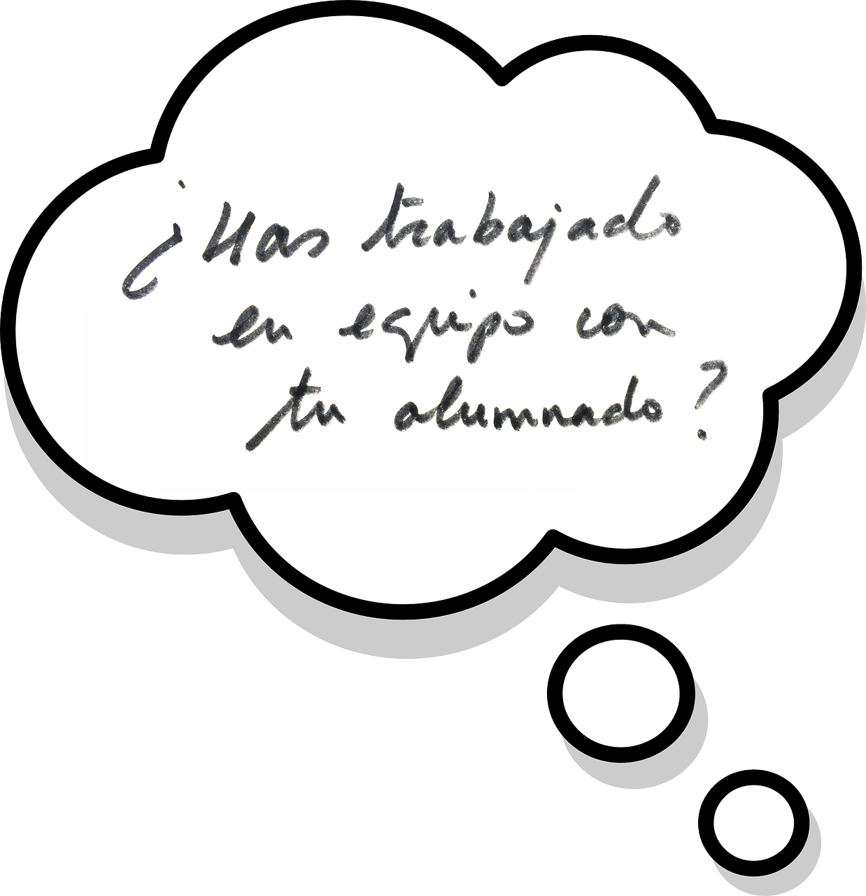

Beneficios de la aplicación de Design Thinking en el aula
Design Thinking puede utilizarse como metodología base para realizar un proyecto o una experiencia con cualquier persona o colectivo, sea cual sea su edad, nivel académico, cultural, etc.
Podemos realizar una experiencia con un grupo de primaria, de secundaria, con personas discapacitadas, con dificultad de aprendizaje, etc.
En todos los casos será importante la figura del dinamizador: un especialista en metodología de diseño con experiencia en dinamización de equipos que pueda facilitar el proceso y ayudar si se produce algún bloqueo. El docente puede comenzar esta tarea y aprender haciendo con su alumnado.
El Design Thinking integrado en el día a día, en el aula, puede aportar beneficios para alumnado y docente, como el desarrollo de algunas habilidades.
Beneficios para el alumno y el docente:
Según mi experiencia, la aplicación de design thinking puede posibilitar:
+ respeto + comunicación + integración.
Desarrolla la empatía y la compasión, lo que lleva a mejorar el respeto a todas las personas (ciudadanía, compañeros y compañeras de clase o de otros cursos, familiares, docentes) e incrementa la capacidad de comunicación.
Tanto el docente como su alumnado tienen que afinar su percepción y ser capaces de ponerse en el lugar de los demás para generar soluciones con sentido.

Existen herramientas como el mapa de empatía para hacerlo. Al utilizar la herramienta se reflexiona sobre los sentimientos, pensamientos y acciones que una determinada persona o grupo de personas puede tener, expresar o llevar a cabo en un determinado contexto.
Potencia la integración del alumnado y la aceptación de la diversidad de miradas o puntos de vista que pueda haber sobre un tema.
Facilita la relación entre diferentes departamentos y el aprendizaje de diferentes materias o áreas.
Lo más importante es la ruta.
Es más importante el aprendizaje que el resultado. Y es así como se obtienen grandes resultados, ya que se elimina la tensión en el individuo por obtener un buen resultado, por no cometer un error y es así, en un ambiente más relajado, como surge la creatividad.
Durante el proceso no es fundamental buscar “la apariencia de las cosas”.
Por ejemplo: no se busca realizar un buen dibujo al hacer un boceto o un esquema, sino un dibujo que comunique. No se busca un prototipo muy fiel o realista, sino que sea suficiente para que nos sirva para testar.
Se premia el asumir riesgos, el experimentar caminos alternativos.
Aumenta tu confianza creativa.
Las personas que participan en proyectos cuya hoja de ruta es Design Thinking suelen aumentar su confianza creativa.
Es la consecuencia de los dos primeros beneficios: si nos respetan más y no sentimos presión por hacerlo mal, nos sentimos libres para ser creativos, para que nuestro ingenio se exprese.
Docentes y estudiantes desarrollan su capacidad de ideación conjuntamente.
El docente debe animar al alumnado a tener verdaderos y enriquecedores brainstormings, o a aplicar otras técnicas de creatividad, dando ejemplo con su participación activa. Debe confiar en el proceso y en el trabajo del alumnado.
En la aplicación de las técnicas de creatividad ninguna idea debe ser desechada inicialmente. De esta forma, el alumno desarrolla su creatividad disfrutando del proceso y sin temer al error.
“El cocodrilo” Es tan importante asegurar la libertad creativa de todos los componentes del equipo, que se utiliza el dibujo de un “cocodrilo” para ”señalar”, mediante una nota adhesiva con el dibujo de un cocodrilo la actitud de crítica de una persona que no aporta soluciones o alternativas.
Quién recibe el cocodrilo, recibe una advertencia “no critiques las ideas de los demás, construye sobre ellas”, y puede pasarle el cocodrilo a continuación a otra persona del equipo que tenga una actitud similar.
+GRUPAL - INDIVIDUAL
DT facilita el entrenamiento constante del trabajo en equipo.
La capacidad de trabajar en equipo es otra de las grandes habilidades que el alumno desarrolla en un proceso de Design Thinking en el aula.
Tal como se indica en el libro Design Thinking for Educators, los alumnos tendrán que cooperar y colaborar en cada una de las fases del proceso de diseño.
El docente también está en un proceso de aprendizaje constante y Design Thinking lo evidencia.
Trabajando de este modo se puede re-diseñar la relación entre docente y alumnado. El desafío es crear durante el proceso un equipo mixto.
Ejercicio de 2 minutos: Desafío: Intégrate en un equipo con tus alumnos, intenta dinamizar sin imponer tu punto de vista o sin que prime tu experiencia.
¿Ya lo habías hecho?, ¿Crees que es posible? Reflexiona.

ABRIR Y CERRAR:
Análisis y síntesis
Diverger y converger
Durante el proceso de diseño el equipo ampliará mucho el foco en la fase de investigación para después cerrarlo y seleccionar un solo reto. En la fase de ideación volverá a abrirlo para luego converger en la selección de una idea a prototipar y testear.
Esta forma de trabajar nos ayuda a mejorar la habilidad para la toma de decisiones y la organización del proyecto. Además nos permite economizar el tiempo disponible, tener un objetivo claro y cumplirlo.
Posibilita trabajar bajo presión y con tiempo limitado. La metodología es ágil, no es lenta. Nos fuerza a trabajar rápido y a tomar decisiones sin meditarlas o debatirlas demasiado.
Beneficios específicos para el alumnado:

El proceso de diseño no solo es una metodología que permite generar soluciones a los estudiantes, o hacerles sentir en el centro de su propio aprendizaje. Además de eso, supone una oportunidad para ellos de desarrollar habilidades y destreza en ámbitos que la sociedad les exige hoy en día.
EXPLORA EL MUNDO.
La metodología parte de la premisa de que hay que conocer cualquier contexto o problemática a fondo, poniéndose en la piel de las personas para detectar sus verdaderas necesidades. Esto es una oportunidad para que el alumnado salga de su zona de confort, para que se abra a otras realidades diferentes a la suya, para que explore la sociedad.
ESPÍRITU CRÍTICO: SÍ, PERO APORTANDO ALTERNATIVAS
Potencia el espíritu crítico - combinado con capacidad de proponer alternativas
La metodología Design Thinking propone que es posible mejorar y evolucionar, encontrar soluciones. Es contraria al conformismo.
El alumnado descubrirá investigando y conociendo diferentes contextos que hay mucho por hacer, que hay mucho por mejorar, sobretodo si pone el foco en las necesidades de las personas.
Pero el alumnado no se quedará solo en una reflexión intelectual, podrá plantear alternativas. Ese es “ el punto fuerte” de la metodología.
“Presentar tus propias ideas”
El alumnado, trabajando en equipo, podrá presentar sus propios prototipos testeados para plantear una alternativa, una mejora o un cambio en algún ámbito, actividad, espacio, etc. de su centro educativo, de su barrio o de su ciudad, o incluso a nivel global.
“La metodología aplicada en el aula no solo es una buena experiencia de aprendizaje para el alumnado, les ofrece otra perspectiva, la de que las cosas se pueden mejorar, se pueden cambiar. Les da esperanza” Javi, estudiante en prácticas
HACER MÁS, DECIR MENOS
La metodología potencia la proactividad en aquellas personas que participan del proceso: proponer soluciones, buscar alternativas, construir prototipos y probarlos, comunicarse con otros para conocer su punto de vista….
Si sabemos cómo prototipar soluciones y mejorarlas testeándolas con las personas, para que vamos a discutir, para qué vamos a debatir. !Hagámoslo sin más y veamos qué ocurre!
HAZLO REALIDAD
¿Y si llevamos nuestra idea testeada a la realidad?
Acción!
El trabajo no se queda a nivel teórico, las ideas se “bajan a tierra”, se prueban y para eso hace falta HACER. Hacer prototipos, experimentos, proyectos piloto... Los proyectos de Design Thinking aportan una perspectiva, a quienes participan de ellos, en la que cualquiera, con aliados, puede cambiar su contexto.
Busca aliados, presenta tu propuesta e impleméntala.
Acuerdo:
Es importante que los alumnos sepan a priori las posibilidades de implementación de sus ideas, así como las limitaciones con las que tienen que contar. No debemos permitir que estén cuatro semanas trabajando en un ambiente creativo y abierto para que luego no se tengan en cuenta sus ideas o propuestas.

Si queremos que participen ahora y en el futuro, tenemos que facilitarles la posibilidad de que se implementen sus aportaciones, que aporten.

Vídeo Design thinking en la educación de Chile:
Video sobre cómo están abordando en Chile la utilización del Design Thinking como estrategia, como metodología para mejorar el aprendizaje.
Este proyecto buscó identificar las barreras y oportunidades de transferir el pensamiento de diseño en la educación chilena, así como desarrollar y testear un modelo conjunto con profesores y directivos de distintos colegios.
El proyecto contó con un equipo interdisciplinario de las facultades de diseño, educación y psicología, además del apoyo de dos investigadores británicos expertos en transferencia de Design Thinking.
Beneficios específicos para el docente:
El Design Thinking integrado en el día a día, en el aula, puede significar beneficios especialmente interesantes para docente:
1- Potencia el aprendizaje
“Para que una experiencia en el aula tenga éxito, tanto el alumnado como el profesorado tienen que estar dispuestos a aprender” Juan, profesor de tecnología
2- Es un medio para descubrir y desarrollar las capacidades de los estudiantes que generalmente no se evalúan.
3- Mejora la percepción del educador por parte del alumnado, que siente que confía en él, en su aprendizaje
El DT, que puede explicarse como una variación del aprendizaje basado en la resolución de problemas, es un medio eficaz para diferenciar las fortalezas de los estudiantes.

Design Thinking en educación por Elena Bernia bajo licencia Creative Commons Reconocimiento-NoComercial-CompartirIgual 4.0 Internacional License.